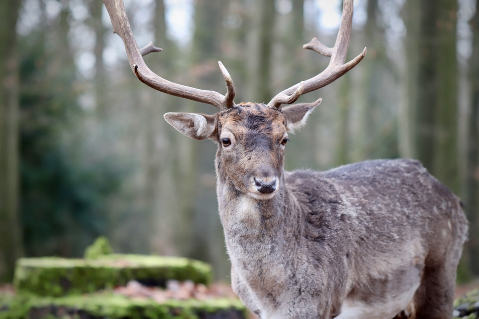

A deer (pl.: deer) or true deer is a hoofed ruminant ungulate of the family Cervidae. It is divided into subfamilies Cervinae (which includes, among others, muntjac, elk (wapiti), red deer, and fallow deer) and Capreolinae (which includes, among others reindeer (caribou), white-tailed deer, roe deer, and moose). Male deer of almost all species (except the water deer), as well as female reindeer, grow and shed new antlers each year. These antlers are bony extensions of the skull and are often used for combat between males.
The musk deer (Moschidae) of Asia and chevrotains (Tragulidae) of tropical African and Asian forests are separate families that are also in the ruminant clade Ruminantia; they are not especially closely related to Cervidae.
Deer appear in art from Paleolithic cave paintings onwards, and they have played a role in mythology, religion, and literature throughout history, as well as in heraldry, such as red deer that appear in the coat of arms of Åland.[2] Their economic importance includes the use of their meat as venison, their skins as soft, strong buckskin, and their antlers as handles for knives. Deer hunting has been a popular activity since the Middle Ages and remains a resource for many families today.
